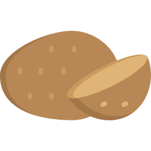
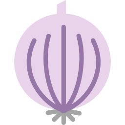
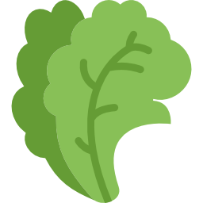
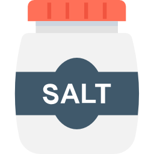
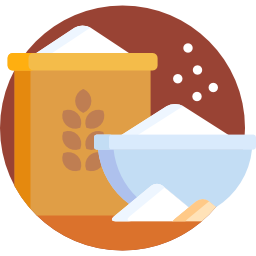

Ingredients
-
 3 Potatoes -
 1 Onion -
 few Corianders -
 Table Salt -
 Flour
Description
Gol gappey making requires 3 stages
- Making Water Balls
- mixtures of potatoes
- The spicy water
Stage1 Making Water balls
To make water balls first we have to make the dough
- Take 2 Cups of Flour
- Pour 1 cup of Water
- Mix it properly
Potato Mixture
Here we have to create the mixture of potato
- Take 3-4 Boiled Potatoes
- Chop 2 onions
- Mix it Properly
- Use salt according to taste
The Spicy Water
Here we make the spicy water
- Pour 4Cups of water
- Grind the Corianders
- Use salt according to the taste
- Use red chilli powder to make it more spicy